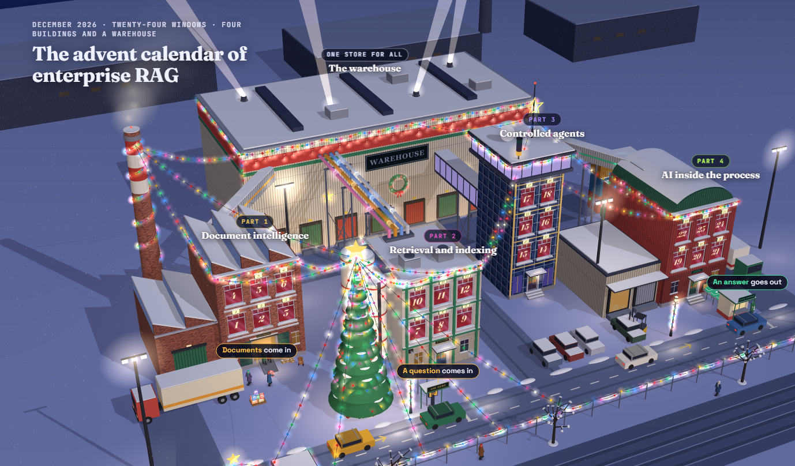

Enterprise RAG on real documents, brick by brick.
From a single PDF to corpus scale: a clear stance, code that runs, apps, and real case studies on public documents.
- 01RAG is not machine learning.
- 02Embeddings aren't magic.
- 03Retrieval is filtering, not search.
- 04You amplify the expert, you don't replace them.

One architecture decision a day, from 1 to 24 December.
A factory at night, four buildings, one window lighting up each morning: enterprise RAG on the documents companies really hold.
Window 1 lights up on 1 December.
Articles
RAG brick by brick: parsing, question, retrieval, generation.
→ Read 02Apps
The engine in real interfaces: a desktop app and web demos.
→ See 03Case studies
The method on real cases: comparison, extraction, agentic search.
→ Explore 04Code
The notebooks that come with the articles, ready to run.
→ GitHubOne engine, then three products
- Vol. 1
PDF RAG
The four bricks, from a single PDF to corpus scale; every answer sourced to the page.
Live - Vol. 2
Multi-format, multi-intent
Word, Excel, PowerPoint and mail; translate, summarize, compare, proofread.
Soon - Vol. 3
Production with tools
The document is produced: a form filled, a table generated, a file rewritten.
Soon - Vol. 4
Agentic RAG with audit
An agent that picks its actions and leaves a verifiable, replayable trail.
Soon - Vol. 5
Web app
Drop a folder, ask a question, read the sourced answer.
Soon - Vol. 6
Desktop app
A local workstation that indexes a folder and answers offline; nothing leaves the machine.
Soon - Vol. 7
Multi-tenant SaaS
The same engine on the server: Postgres, S3, OIDC, billing.
Soon